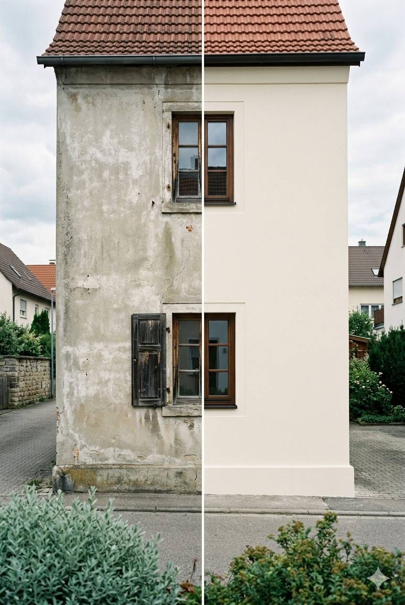
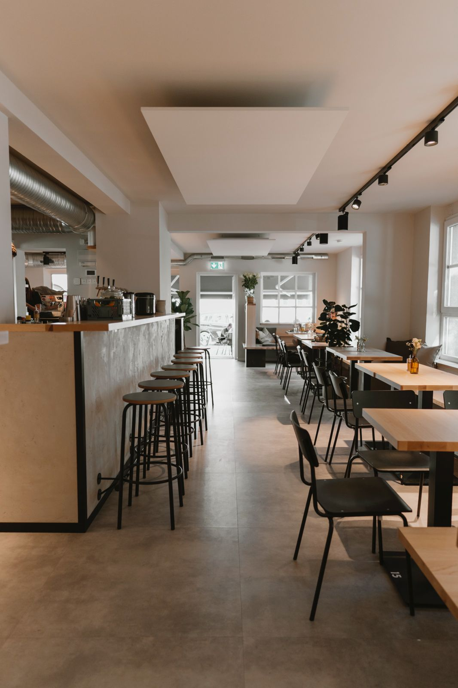
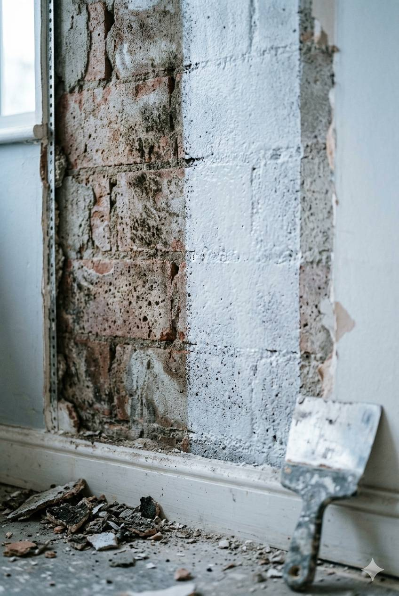
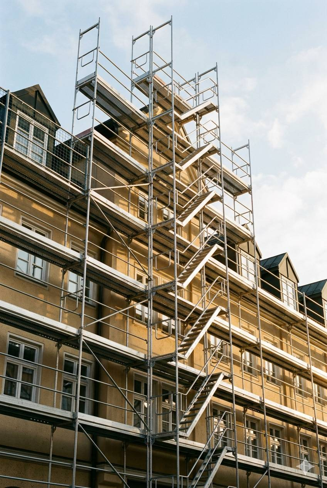

✦
Lackierarbeiten
Fenster, Türen, Geländer, Möbel — präzise Lackierung in allen Glanzgraden, innen und außen.
Vom ersten Pinselstrich bis zum letzten Gerüstteil — wir decken den kompletten Malerprozess in einer Hand ab. Ohne Subunternehmer, ohne Schnittstellen, ohne Ausreden.
Mit der richtigen Farbgestaltung des Außenanstrichs kann sich Ihr Gebäude harmonisch in die Nachbarschaft einfügen und ein Zuhause auch von außen einzigartig präsentieren. Innen sorgen wir für Räume, in denen man gerne lebt.


Heutzutage gibt es fast keine Grenzen für Ihre Gestaltungswünsche. Aus langweiligen Kinderzimmern zaubern wir ein Actionparadies für Kinder oder verwandeln Ihren Essbereich in einen eleganten Salon.
Die Ursachen können vielfältig sein — Wasserschaden, undichte Fassaden oder mangelnde Belüftung. Wir finden den Auslöser, beseitigen den Befall dauerhaft und bringen Ihre Räume zurück in einen gesunden Zustand.


Kein Warten auf Fremdfirmen, keine doppelte Logistik. Wir besitzen ein eigenes Gerüst bis zu 2.000 m² und montieren es selbst. Das spart Zeit, Geld und Nerven — und kommt auch bei Auftragsspitzen schnell zu Ihnen.
Was nicht in den großen Detailblöcken steht — hier ist die vollständige Übersicht. Fehlt etwas? Fragen Sie uns einfach.
Fenster, Türen, Geländer, Möbel — präzise Lackierung in allen Glanzgraden, innen und außen.
Wände, Decken, Vorbauten — komplette Trockenbaulösungen inkl. Spachtelung und Anstrich.
Perfekt abgestimmte Dämmsysteme — WDVS, Innendämmung, Sockeldämmung. Nachhaltig planen.
Holz, Vinyl, Teppich, Designboden — kompetente Auswahl und professionelle Verlegung.
Balkone, Garagen, Stützen — Rissinjektion, Ausbesserung und Schutzbeschichtung.
Sie haben ein Projekt, das hier nicht aufgelistet ist? Sprechen Sie uns an — wir finden eine Lösung.
Anfragen →Beratung vor Ort, Aufmaß, klares Angebot — alles kostenlos und unverbindlich.